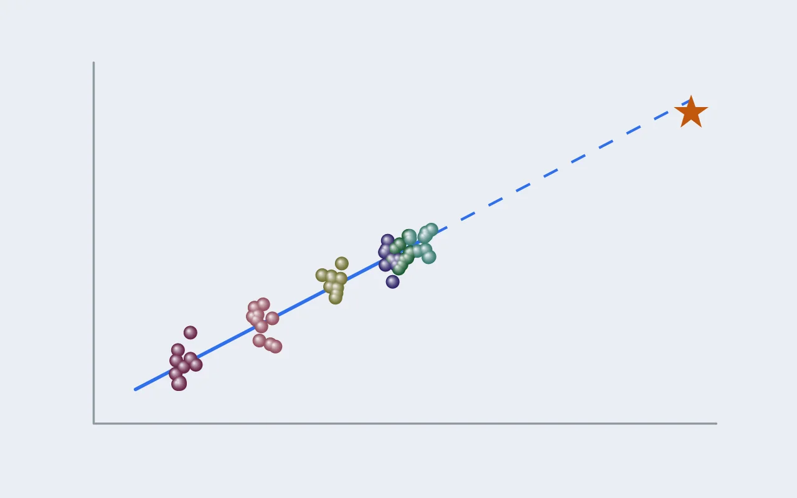
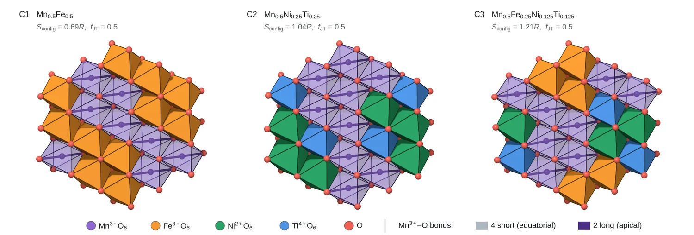
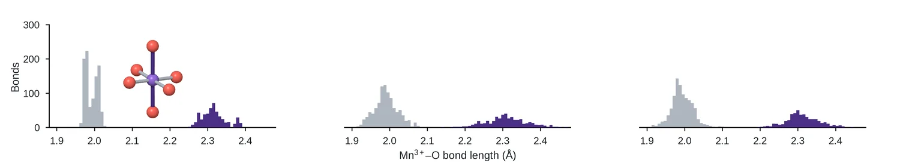
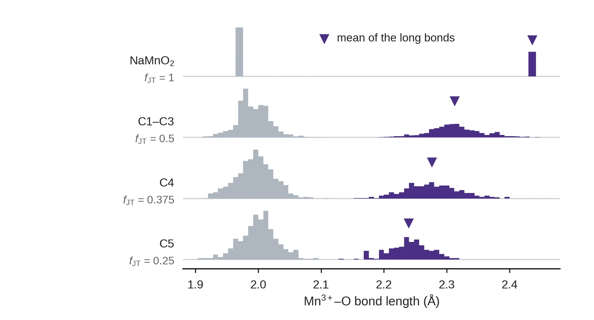
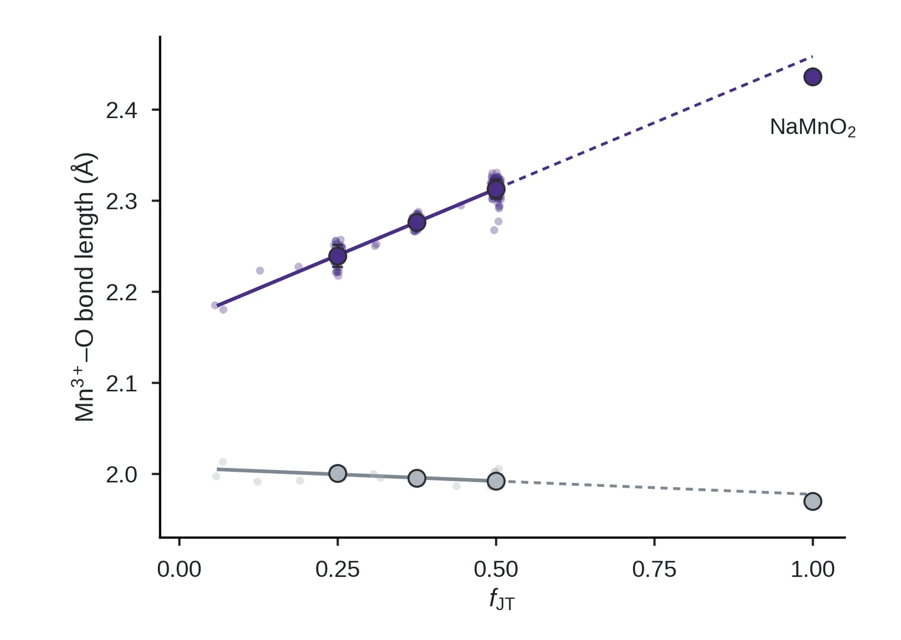
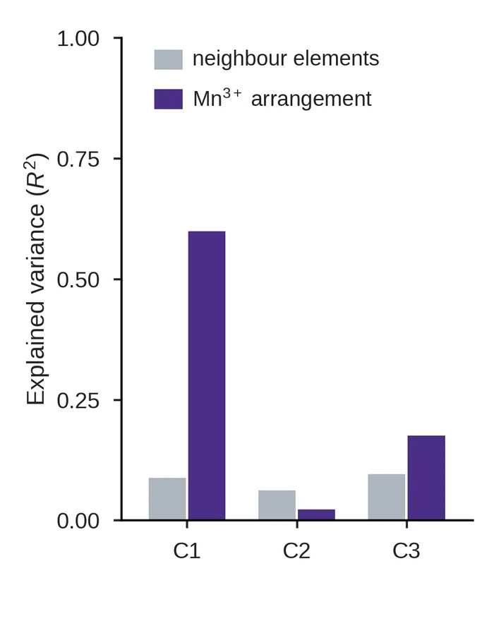

연구 [3] — 엔트로피가 아니라 얀-텔러 이온의 비율이었다: 늘어나는 것은 긴 결합 둘
연구 [1]에서 물었습니다. Mn³⁺의 얀-텔러 왜곡을 정하는 것은 구성 엔트로피인가, 이웃 원소의 종류인가, 얀-텔러 이온의 비율인가. 연구 [2]에서 그 답을 낼 DFT 데이터를 만들었고, 이 글은 그 답입니다. 결론부터 말하면 비율이었고, 왜곡은 긴 결합 둘이 늘어나는 정도로 나타났습니다.

이 글에 나오는 말
- 얀-텔러 왜곡: eg 궤도에 전자가 홀수 개인 이온(이 글에서는 Mn³⁺)의 팔면체가 한 축으로 늘어나 에너지를 낮추는 현상입니다. Mn³⁺–O 결합 여섯 개가 짧은 넷과 긴 둘로 갈리고, 이 글에서는 긴 결합 둘의 길이로 왜곡의 크기를 잽니다.
- α-NaMnO₂: 전이금속(TM) 자리가 전부 Mn³⁺인 기준 물질입니다. 같은 조건으로 계산한 긴 결합은 2.436 Å입니다.
- fJT: TM 자리 가운데 Mn³⁺가 차지하는 비율입니다. α-NaMnO₂는 1, C1~C3은 0.5, C4는 0.375, C5는 0.25입니다.
- 구성 엔트로피 Sconfig: TM 자리에 섞인 원소들의 비율 x로 계산한 −R Σ x ln x입니다. 원소가 많고 고르게 섞일수록 큽니다. C1은 0.69R, C2는 1.04R, C3은 1.21R입니다.
- C1~C6: 연구 [1]에서 설계한 조성입니다. C1~C3은 fJT = 0.5로 같고 Mn³⁺의 이웃만 다르며(C1은 Fe³⁺, C2는 Ni²⁺와 Ti⁴⁺, C3은 셋의 혼합), C4(1.21R)는 C3과, C5(1.04R)는 C2와 엔트로피가 같고 fJT만 낮습니다. C6은 얀-텔러 이온이 없도록 설계한 조성입니다.
- 배열: 같은 조성에서 TM 자리에 원소를 놓는 방법 하나입니다. 연구 [2]에서 조성마다 30개를 골라 DFT로 이완했고, 64원자 셀에 Mn³⁺가 8개씩 있어 C1~C3은 조성당 Mn³⁺ 240자리입니다.
- Van Vleck 모드: 팔면체 꼭짓점 여섯 개의 변위를 대칭에 따라 나눈 성분으로, 결합 길이 대신 얀-텔러 왜곡의 크기를 재는 표준 척도입니다 [1].
- R²: 맞춘 직선이나 모형이 데이터의 흩어짐을 얼마나 설명하는지를 0~1로 나타낸 값입니다. 5절에서는 셀 단위로 나눠 교차검증한 값을 씁니다.
요약
질문. Mn³⁺의 얀-텔러 왜곡을 정하는 것은 구성 엔트로피인가, 이웃 원소의 종류인가, 얀-텔러 이온의 비율 fJT인가.
방법. 연구 [2]에서 DFT로 이완한 셀에서 Mn³⁺–O 결합 여섯 개를 모두 재어 짧은 넷과 긴 둘로 나눴습니다. fJT가 0.5로 같고 엔트로피가 0.69R, 1.04R, 1.21R로 다른 C1~C3을 견주고, 엔트로피가 같고 fJT만 다른 쌍(C2·C5, C3·C4)을 견줬습니다. 셀 평균 결합 길이를 fJT에 대해 직선으로 맞췄고, 128원자 셀 90개(CHGNet)에서는 같은 셀 안 자리끼리의 차이를 이웃 원소의 종류와 주변 Mn³⁺의 배치로 예측해 봤습니다.
답. 비율입니다. C1~C3의 긴 결합 평균은 2.316, 2.310, 2.312 Å로 0.006 Å 안에서 같았고, 엔트로피와 이웃을 바꿔도 왜곡은 변하지 않았습니다. fJT를 낮추면 짧은 결합 넷(1.99~2.00 Å)은 그대로이고 긴 결합 둘만 짧아졌으며, 긴 결합은 2.167 + 0.291 fJT Å의 직선(R² 0.91)을 따랐습니다. Van Vleck 모드로 재도 결론은 같았습니다. 같은 셀 안 자리마다의 차이도 이웃 원소의 종류로는 10%도 설명되지 않았고, 설명되는 경우에는 다른 Mn³⁺의 배치가 설명했습니다.
1. 엔트로피와 이웃이 다른 세 조성
첫 질문은 구성 엔트로피가 왜곡을 바꾸는지입니다. 이를 보려면 fJT는 같고 엔트로피만 다른 조성을 비교하면 됩니다. C1, C2, C3이 바로 그런 계열입니다. 셋 다 TM 자리의 절반이 Mn³⁺이고(fJT = 0.5), 나머지 절반을 각각 Fe³⁺, Ni²⁺와 Ti⁴⁺, 그 셋 모두로 채웠습니다.

그림 1은 세 조성의 실제 구조입니다. Mn³⁺를 둘러싼 원소가 C1은 Fe³⁺(주황)뿐이고, C2는 Ni²⁺(초록)와 Ti⁴⁺(파랑)이며, C3은 세 원소가 섞여 있습니다. 그런데 세 구조 모두에서 Mn³⁺ 팔면체 안의 긴 결합(진한 막대)은 한 방향으로 정렬해 있습니다. 이웃이 이렇게 다른데 팔면체가 늘어나는 정도도 같을지는 결합 길이를 재 봐야 알 수 있습니다.
2. 결합 길이: 세 조성 모두 같은 두 봉우리
조성마다 배열 30개, Mn³⁺ 240자리의 Mn–O 결합 여섯 개를 모두 재서 분포로 그렸습니다.

그림 2에서 세 분포는 모두 두 봉우리로 갈립니다. 짧은 결합의 평균은 1.992, 1.991, 1.993 Å이고, 긴 결합의 평균은 2.316, 2.310, 2.312 Å입니다. 엔트로피가 0.69R에서 1.21R로 거의 두 배가 되고 이웃이 통째로 바뀌었는데도, 두 봉우리의 위치는 0.006 Å 안에서 같았습니다. 이는 적어도 이 범위에서 구성 엔트로피도, 이웃 원소의 종류도 얀-텔러 왜곡의 크기를 바꾸지 않는다는 뜻입니다. 특히 Ti⁴⁺가 주변을 붙잡아 얀-텔러를 누른다면 Ti⁴⁺가 가장 많은 C2의 긴 결합이 가장 짧아야 하는데, 그렇지 않았습니다.
다만 하나는 달랐습니다. 분포의 폭입니다. 긴 결합의 표준편차는 C1이 0.032 Å, C2가 0.056 Å, C3이 0.043 Å로, 이웃이 섞일수록 자리마다의 차이가 커졌습니다. 이웃 원소는 평균을 바꾸지는 못하지만 흔들림에는 흔적을 남깁니다.
3. 비율을 바꾸면: 긴 결합만 움직인다
엔트로피가 왜곡을 정하지 않는다면 무엇이 정하는지가 다음 질문입니다. 그래서 fJT를 바꿨을 때 결합 길이가 어떻게 달라지는지 봤습니다.

그림 3에서 짧은 결합의 봉우리(회색)는 모든 줄에서 1.99–2.00 Å에 그대로 있습니다. 움직이는 것은 긴 결합의 봉우리(보라)뿐입니다. ▼로 표시한 긴 결합의 평균은 α-NaMnO₂의 2.436 Å에서 2.313 Å(fJT 0.5), 2.276 Å(0.375), 2.239 Å(0.25)로 줄어듭니다. 이는 얀-텔러 왜곡이 팔면체 전체가 찌그러지는 것이 아니라, 긴 결합 둘이 얼마나 늘어나느냐의 문제이고, 그 정도를 fJT가 정한다는 뜻입니다.
이 비교는 엔트로피의 영향도 함께 배제합니다. 엔트로피가 같은 조성 쌍끼리 비교하면, C2(1.04R, fJT 0.5)의 긴 결합은 2.310 Å인데 C5(1.04R, fJT 0.25)는 2.241 Å이고, C3(1.21R, 0.5)는 2.312 Å인데 C4(1.21R, 0.375)는 2.277 Å입니다. 엔트로피가 같아도 fJT가 낮으면 긴 결합이 짧아졌습니다.
4. 숫자로: 직선 하나
마지막으로 셀마다 긴 결합과 짧은 결합의 평균을 fJT에 대해 그렸습니다.

그림 4에서 긴 결합(보라)은 직선 하나를 따릅니다. 긴 결합 = 2.167 + 0.291 fJT Å이고 R²는 0.91입니다. 반면 짧은 결합(회색)의 기울기는 −0.03으로 거의 평평합니다. 이 직선을 fJT = 1까지 늘리면 2.458 Å인데, 따로 계산한 α-NaMnO₂는 2.436 Å로 조금 아래에 있습니다. 0.02 Å 차이라 같은 규칙 위에 있다고 볼 수 있지만, 정확히 일치하지는 않는다는 점은 그대로 남겨 둡니다.
그림 4 왼쪽 아래, fJT가 0.0625–0.19인 점 몇 개도 눈여겨볼 만합니다. 얀-텔러 이온이 없도록 설계한 C6에서 Ni가 뭉쳐 전하가 옮겨가면서 Mn³⁺가 생긴 셀들입니다(연구 [2]). 설계로 넣은 Mn³⁺든 전하 이동으로 생긴 Mn³⁺든 같은 직선 위에 놓입니다. 규칙을 정하는 것은 Mn³⁺가 어디서 왔느냐가 아니라 몇 개 있느냐입니다.
같은 결론을 다른 방식으로도 확인했습니다. 셀 평균 왜곡(긴 결합 평균 ÷ 짧은 결합 평균)을 엔트로피에 대해 그리면 R²가 0.007이고, fJT에 대해 그리면 0.889입니다. 또 결합 길이 대신 팔면체 왜곡의 국제 표준 척도인 Van Vleck 모드로 크기를 재도 [1], 우리 척도와의 상관계수가 0.998이었고 C1, C2, C3의 값도 0.530, 0.522, 0.522 Å로 같았습니다.
5. 자리 수준: 같은 셀 안에서도 이웃 원소는 아니다
지금까지는 조성끼리, 셀끼리 평균을 비교했습니다. 그런데 그림 2를 다시 보면 분포에 폭이 있습니다. 같은 조성, 심지어 같은 셀 안에서도 Mn³⁺마다 긴 결합이 조금씩 다릅니다. 마지막으로 남는 질문은 자리마다 다른 이유가 그 자리의 이웃 원소 때문인가입니다.
이 질문은 64원자 셀로는 정확히 답하기 어려웠습니다. 셀이 작아서 긴 축 방향 이웃이 같은 원자의 복사본이 되는 문제가 있었기 때문입니다(연구 [2] 9절). 그래서 긴 축 방향으로 두 배 큰 128원자 셀 90개(CHGNet)에서, 같은 셀 안 자리끼리의 차이를 두 가지 정보로 예측해 봤습니다. 하나는 이웃 원소의 종류(가장 가까운 여섯 자리의 Fe, Ni, Ti 수), 다른 하나는 주변 Mn³⁺의 배치(6 Å 안의 다른 Mn³⁺가 긴 축에 대해 어느 쪽에 몇 개 있나)입니다. 예측력은 셀 단위로 나눠 검증한 R²로 쟀습니다.

그림 5에서 회색 막대는 세 조성 모두 바닥에 있습니다. 이웃 원소의 종류는 자리 차이를 10%도 설명하지 못했습니다(C1 0.09, C2 0.06, C3 0.10). 반면 보라 막대는 조성마다 달라서, Fe만 섞인 C1에서는 주변 Mn³⁺의 배치가 자리 차이의 60%를 설명했고, C3에서는 18%, C2에서는 거의 설명하지 못했습니다.
이는 조성 수준에서 본 결론이 자리 수준에서도 그대로 이어진다는 뜻입니다. 자리마다의 차이를 만드는 것도 옆에 어떤 원소가 있느냐가 아니라, 다른 얀-텔러 이온이 어디에 있느냐입니다. 다만 C2의 자리 차이(셀 안 표준편차 44 mÅ)는 둘 중 어느 것으로도 설명되지 않아서, 무엇이 만드는지는 아직 열린 질문으로 남겨 둡니다.
6. 이것이 뜻하는 것
- 엔트로피 설명은 이 범위에서 지지되지 않는다. 같은 fJT에서 엔트로피를 두 배 가까이 올려도 왜곡은 그대로였다. 고엔트로피 조성에서 얀-텔러가 줄었다는 관찰 [2]은 그 조성들의 fJT가 낮았던 것으로 설명될 수 있다.
- 특정 원소의 고정 효과도 지지되지 않는다. Ti⁴⁺가 가장 많은 C2의 긴 결합이 Fe³⁺만 있는 C1과 같았다 [3].
- 자리 수준에서도 이웃 원소는 무관하다. 같은 셀 안 자리 차이를 이웃 원소의 종류는 10%도 설명하지 못했고, 무언가 설명한다면 그건 다른 얀-텔러 이온의 배치였다.
- 얀-텔러를 다루는 설계 변수는 fJT다. 원소를 몇 가지 섞었는지가 아니라 Mn³⁺가 TM 자리를 얼마나 차지하는지가 긴 결합의 길이를 정한다. 나머지 원소는 전압, 가격, 공기 안정성 같은 다른 목표에 맞춰 고를 수 있다.
아직 조심해야 할 것
- 엔트로피 범위: 시험한 범위는 0.69–1.21R이다. 통상의 고엔트로피 범위(1.5R 이상)는 아직 시험하지 않았다.
- 계산 조건: 64원자 셀, 0 K, 강자성 배열에서 계산했다. 다만 Mn³⁺의 협동 정렬은 α-NaMnO₂에서 상온에서도 실제로 관찰되는 성질이다.
- fJT가 낮은 조성의 이웃: C4, C5에서는 fJT가 낮아질 때 Mn⁴⁺ 이웃도 함께 늘어난다. 그래서 핵심 근거는 Mn⁴⁺가 없는 C1–C3과, 직선이 α-NaMnO₂까지 이어진다는 사실이다.
정리
- fJT가 같은 세 조성은 엔트로피와 이웃이 달라도 긴 결합이 2.310–2.316 Å로 같았다.
- 엔트로피가 같은 쌍에서 fJT를 낮추면 긴 결합이 짧아졌다.
- 얀-텔러 왜곡은 긴 결합 둘이 늘어나는 정도로 나타나고, 그 길이는 fJT에 대해 직선 하나를 따른다. 짧은 결합은 거의 변하지 않는다.
- 같은 셀 안 자리마다의 차이도 이웃 원소로는 설명되지 않는다(10% 미만).
다음. 그림 1의 세 구조에서 긴 축이 모두 한 방향을 향한 것은 우연이 아닙니다. 모든 Mn³⁺가 같은 방향으로 늘어나면 격자 전체가 그 방향으로 늘어납니다. 연구 [4]에서는 팔면체 하나하나의 늘어남이 어떻게 격자 전체의 변형이 되는지, 그리고 그 방향을 무엇이 정하는지 다룹니다.
참고문헌
- Nagle-Cocco, L. A. V. & Dutton, S. E. Van Vleck analysis of angularly distorted octahedra using VanVleckCalculator. J. Appl. Cryst. (2024).
- Massaro et al. Entropy-driven mechanisms in P2-type layered oxide cathodes for sodium-ion batteries. J. Mater. Chem. A (2026).
- Jia, X.-B. et al. Design principles of practical industrial-scale layered oxide cathodes with air/water stability for sustainable sodium-ion batteries. Nat. Commun. 16 (2025).

Seok
연구하면서 개발합니다. 배터리 재료를 원자 단위에서 계산하는 법을 바닥부터 배우는 중입니다. → 글 더 보기